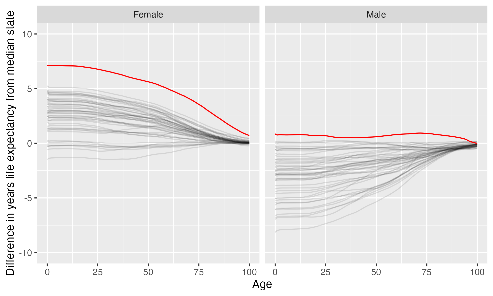

Pacific Rim Christian University
Pacific Rim Christian University is located in Honolulu, Hawaii. It is a private not-for-profit, 4-year or above institution.
Notes
These are items that bear looking into more closely.
This institution’s six year graduation rate is 100%, which is unusually high: seemingly every student who enters graduates.
There are apparently no tenure stream faculty. This can indicate a risk to academic freedom and thus educational quality, as faculty members may be able to lose their positions because of their speech, publications, or research findings.
From 2011 to 2021, full time undergraduate enrollment dropped from 68 to 56, a decline of 17.6%
Overview of institution
Institution kind: Baccalaureate Colleges: Diverse Fields
Undergrad program: Balanced arts & sciences/professions, high graduate coexistence
Graduate program: Postbaccalaureate: Other-dominant, with Arts & Sciences
Enrollment profile: High undergraduate (see more details below)
Average net price for undergrads on financial aid: $19,605 (1 times the equivalent cost of Harvard).
Actual price for your family: Go here to see what your family may be asked to pay. It can be MUCH lower than the average price but also higher for some.
Size and setting: Four-year, very small, primarily nonresidential
In state percentage: 100% of first year students come from Hawaii
In US percentage: 100% of first year students come from the US
This institution has a religious affiliation of Other Protestant
Graduation rate (within 6 years) for students seeking a Bachelors: 100% (this is what is usually reported as “graduation rate”)
Graduation rate (within 4 years) for students seeking a Bachelors: 33.3%
Percent of students seeking a Bachelors who transfer out of this institution: 42.9%
Student to tenure-stream faculty ratio: Unknown (undergrads to tenure-stream faculty) [Tenure explained]
Student to faculty ratio: Unknown (undergrads to all faculty)
Degrees offered: Certificate of less than 1 year, Certificate of less than 12 weeks, Associate’s degree, Bachelor’s degree, Master’s degree
Schedule: Semester
Institution provides on campus housing: Yes
Dorm capacity: There are enough dorm beds for 35 students
Freshmen required to live on campus: No
Covid vaccination requirement for students: This institution was never reported as requiring covid vaccination for students (based on info from here)
Covid vaccination requirement for faculty/staff: This institution was never reported as requiring covid vaccination for faculty and/or staff (based on info from here)
Advanced placement (AP) credits used: Yes
Disabilities: 3.97 percent of undergrads are registered as having disabilities.
Overview of location
- Abortion in this state: Protective (based on https://states.guttmacher.org/policies/ as of May 10, 2023)
- Gun law stringency: A- (higher grade = more stringent)
- State rep support for contraception: 100% of US reps from this state voted in favor of legal protections for contraception.
- State rep support for recognizing same-sex and interracial marriage: 100% of US reps from this state voted in favor of requiring states to recognize same-sex and interracial marriages performed in other states
- Anti-trans legislative risk for adults over the next two years: Safest (based on Erin Reed’s work, as of September 6, 2023)
- Ecological region: Hawaii tropical dry forests
- Biome: Tropical & Subtropical Dry Broadleaf Forests
- Distance to mountains: 0.9 miles to Koʻolau Range
- Climate: See overview at WeatherSpark
Other links
Similar institutions
This is using information about school size, acceptance rate, yield rate, graduation rate, cost, athletic conference, and similar metrics, but it can miss important axes of similarity (for example, culinary versus hair styling schools).
Map
Enrollment
| Pacific Rim Christian University | Change over ≤ 12 years | |
|---|---|---|
| Undergrads (full time) | 56 (2021) |

|
| Undergrads (part time) | 55 (2021) |

|
| Grad students (full time) | 6 (2021) |

|
| Grad students (part time) | 18 (2021) |

|
| Admission rate (undergrads) | 60% (2020) |

|
| Yield rate (percent of applicants offered undergraduate admission who accept) | 81% (2020) |

|
| Graduation rate (bachelors in 6 years) | 100% (2022) |

|
| Transfer out rate (bachelors) | 43% (2021) |

|
Student financing
At many universities, almost no students pay the listed tuition and fees (“sticker price”): instead, their financial aid package lowers this dramatically, but how much students pay can vary substantially based on family income and other factors. The tuition below is the average across many students receiving aid: your family may be asked to pay less or more than this.
| Pacific Rim Christian University | Change over ≤ 12 years | |
|---|---|---|
| Average net price (for students awarded aid) | $19,605 (2021) |

|
| Undergrads getting federal aid | 80% (2022) |

|
| Undergrads getting any aid | 80% (2022) |

|
| Undergrads getting Pell grants | 80% (2022) |

|
Teaching
Student details
| Pacific Rim Christian University | Change over ≤ 12 years | |
|---|---|---|
| Dorm capacity | 35 (2022) |

|
| Percent of undergrads with registered disabilities (≤3 is rounded up to 3) | 4.0% (2022) |

|
Institution finances
| Pacific Rim Christian University | Change over ≤ 12 years | Trend | |
|---|---|---|---|
| Revenue from tution and fees | 44% (2022) |

|
|
| Revenue | $2.4 M (2022) |

|
↑ $99,194 per year |
| Expenses | $1.8 M (2022) |

|
↑ $65,752 per year |
| Assets | $1.7 M (2022) |

|
↑ $83,950 per year |
Graduation rates
Graduation rates for bachelor’s degrees within 150% of normal time (6 years for a 4-year degree). Note that this uses US federal demographic data: it only has two genders and a specified set of ethnicities and races. For groups with small numbers, the graduation rate may be highly variable year to year (do all three people in this group graduate this year or just two of three, for example).
| Pacific Rim Christian University | Change over ≤ 12 years | |
|---|---|---|
| Total | 100% (2022) |

|
| Men | 100% (2022) |

|
| Women | 100% (2022) |

|
| Asian men | 100% (2021) |

|
| Asian women | 0% (2021) |

|
| Black or African American men | 100% (2020) |

|
| Black or African American women | 0% (2016) |

|
| Hispanic men | 100% (2022) |

|
| Hispanic women | 0% (2017) |

|
| Native Hawaiian or other Pacific Islander men | 0% (2021) |

|
| Native Hawaiian or other Pacific Islander women | 0% (2019) |

|
| White men | 100% (2022) |

|
| White women | 0% (2019) |

|
| Two or more races men | 0% (2020) |

|
| Two or more races women | 100% (2022) |

|
Freshmen demographics
Demographic data for first time degree-seeking students. Note that this uses US federal demographic data: it only has two genders and a specified set of ethnicities and races.
| Pacific Rim Christian University | Change over ≤ 12 years | |
|---|---|---|
| Men (percent freshmen) | 29% (2022) |

|
| Women (percent freshmen) | 71% (2022) |

|
| American Indian or Alaska Native men (percent freshmen) | 0% (2022) |

|
| American Indian or Alaska Native women (percent freshmen) | 0% (2022) |

|
| Asian men (percent freshmen) | 0% (2022) |

|
| Asian women (percent freshmen) | 14% (2022) |

|
| Black or African American men (percent freshmen) | 0% (2022) |

|
| Black or African American women (percent freshmen) | 0% (2022) |

|
| Hispanic men (percent freshmen) | 0% (2022) |

|
| Hispanic women (percent freshmen) | 14% (2022) |

|
| Native Hawaiian or Other Pacific Islander men (percent freshmen) | 29% (2022) |

|
| Native Hawaiian or Other Pacific Islander women (percent freshmen) | 14% (2022) |

|
| White men (percent freshmen) | 0% (2022) |

|
| White women (percent freshmen) | 14% (2022) |

|
| Two or more races men (percent freshmen) | 0% (2022) |

|
| Two or more races women (percent freshmen) | 14% (2022) |

|
| Race ethnicity unknown men (percent freshmen) | 0% (2022) |

|
| Race ethnicity unknown women (percent freshmen) | 0% (2022) |

|
| Nonresident alien men (percent freshmen) | 0% (2021) |

|
| Nonresident alien women (percent freshmen) | 0% (2021) |

|
Freshmen geography
| Pacific Rim Christian University | Change over ≤ 12 years | |
|---|---|---|
| In state | 100% (2022) |

|
| US | 100% (2022) |

|
| Not reported | 0% (2022) |

|
Tenure track faculty
Tenure track faculty are those who are eligible for tenure. This includes both pre-tenure and tenured faculty. Once faculty get tenure, they are (generally) protected from being fired for intellectual reasons, helping to ensure their freedom in teaching and research. They can still lose their positions for misconduct, financial problems, not fulfilling their duties, or other reasons. Note that this chart uses US federal demographic data: it only has two genders and a specified set of ethnicities and races.
Non-tenure track faculty
Non-tenure track faculty are not eligible for tenure. Some are hired one semester at a time, some have multi-year contracts. They typically have a higher teaching load than tenure track faculty, leaving less time for research or other creative endeavors. They are also easier to fire than tenured faculty. Sometimes they are external experts (a noted musician, a former senator) who are hired to teach some classes without the expected permanence of a tenure-track position. Note that this chart uses US federal demographic data: it only has two genders and a specified set of ethnicities and races.
Library facilities
SAT scores
ACT scores
Degrees by major
Bachelors
Masters
Doctorate
Certificate
Associates
Demographic cliff
There is a concern that giving changing US demographics, the number of students in the age groups who most commonly attend four year colleges will drop off, decreasing overall enrollment. This is often referred to as the “demographic cliff”. This concern comes with a lot of assumptions about the rate at which students will want to go to college, students coming from outside the US, what age students are when they go to college, overall immigration and emigration rates, whether there will be more or fewer colleges competing for students, time to degree and dropout rates remaining constant, and much more, but analyses often also look at just the population of the US as a whole, even though there can be substantial variation in growth by region. For this section, I am using US census data on the number of people in each state by age, and the proportion of students that come from each state for this particular college, to crudely model what will happen if everything remains constant except the demographic change in the population of 18 year olds in each year. For selective schools, they could probably change their admission rate and maintain enrollment; for less selective schools, they may need to change their marketing or other strategies to attract more students if they pull from areas with decreasing number of students of “traditional” college age, or, in rare cases, close. If there is no figure below, breakdowns of students by state are not available. Note that this uses just the 50 US states, not other US territories.

Life expectancy
This hopefully will not be relevant for potential students, but it may be for people moving to an area longer term, such as faculty and staff choosing where to live. This uses information from US National Vital Statistics Reports for 2020; like much federal data, it assumes people are male or female. For age difference from median, it is from the median state, averaging across all genders (one consequence of this is that the difference from the median life expectancy is almost always negative for men).
- Life expectancy at birth: 83.8 years women (7.1 years over the median), 77.6 years men (0.8 years over the median)
- Remaining life expectancy at age 18: 66.4 years women (7 years over the median), 60.1 years men (0.7 years over the median)
- Remaining life expectancy at age 30: 54.7 years women (6.6 years over the median), 48.7 years men (0.5 years over the median)
- Remaining life expectancy at age 45: 40.4 years women (5.8 years over the median), 35.1 years men (0.5 years over the median)
- Remaining life expectancy at age 60: 26.9 years women (5 years over the median), 22.7 years men (0.8 years over the median)
We can also plot the extra / fewer years of life expected for this state (red) compared to other states (dark gray) at each age. Again, this is normalized for the median state.
